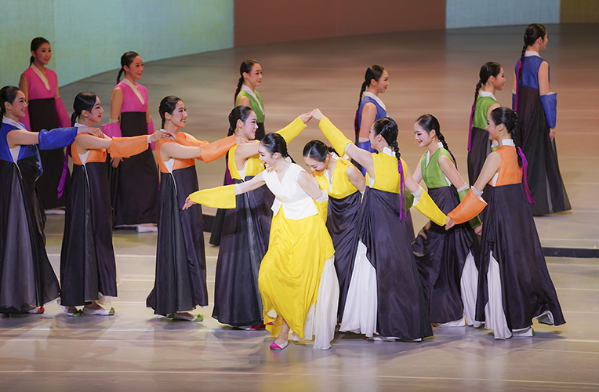

무용단 정기공연 <강강>
- 일시
- 3.3.(금) ~ 3.4.(토) 주중 19:30 주말 15:00
- 장소
- 연악당
- 관람료
- S석 10,000원 A석 8,000원
- 출연진/연출진
- 국립부산국악원 국악연주단 무용단 및 객원/ 정신혜(연출·안무·무용감독), 천정완(대본), 이정호(음악감독·지휘·작곡) 등
- 관람연령
- 취학아동이상
강강술래의 서사와 서정을 담아. 생성과 소멸을 품은 삶의 노래로 맺고 푼다!
유네스코의 전통춤 강강술래를 재해석한 무용극. 시작과 끝이 없는 원(圓)의 시간으로 원무는 가장 원초적인 춤이자 근원적인 기원을 담고 있다. 손을 잡으면서 맺고 손을 놓으면서 푸는 삶을 닮은 춤, 강강술래를 통해 순환·상생·긍정의 힘을 느껴보자.
세부프로그램
프롤로그_생성과 소멸 1장 맺는 강강 2장 놀이, 원형의 삶 3장 푸는 강강 에필로그_다시, 소멸과 생성
* 공연내용과 일정은 사정에 따라 변경 될 수 있습니다.
